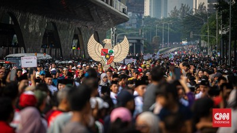

Demokrasi Pancasila (1966-1998)
Demokrasi Pancasila adalah sebuah sistem demokrasi yang menjadikan pancasilla sebagai landasan nilai negara Indonesia. Konsep demokrasi pancasila merujuk pada sistem politik yang diterapkan di Indonesia, di mana demokrasi dijalankan berdasarkan prinsip-prinsip dan nilai-nilai Pancasila. Semua sila dalam Pancasila memiliki kedudukan yang sama dan setara. Sehingga, keterkaitan antara silanya menjadi satu kesatuan membentuk demokrasi. Peran Pancasila dalam berbagai bidang serta penyelesaian masalah nasional melalui permusyawaratan untuk mencapai mufakat adalah wujud dari demokrasi Pancasila itu sendiri.
|
 |
Ciri-ciri dari demokrasi pancasila :
- Dasar nilai pancasila
Demokrasi ini didasarkan terhadap nilai-nilai Pancasila, yaitu Ketuhanan Yang Maha Esa, Kemanusiaan yang Adil dan Beradab, Persatuan Indonesia, Kerakyatan yang Dipimpin oleh Hikmat Kebijaksanaan dalam Permusyawaratan/Perwakilan, dan Keadilan Sosial bagi Seluruh Rakyat Indonesia. Nilai-nilai ini menjadi pedoman dalam menjalankan kehidupan sehari-hari dan kebijakan-kebijakan.
- Kedaulatan Rakyat
Demokrasi ini mengutamakan kedaulayan rakyat sebagai prinsip utama. Kekuasaan politik juga berada di tangan rakyat yang diterapkan melalui pemilu. Rakyat memiliki hak untuk memilih pemimpin mereka dan berpartisipasi dalam proses pengambilan keputusan politik.
- Keberagaman dan Toleransi
Keberagaman sosial, budaya, dan agama di Indonesia mendorong adanya kerukunan, toleransi, dan menghargai perbedaan dalam masyarakat. Hal ini terbukti dari prinsip persatuan Indonesia dalam Pancasila.
- Gotong Royong
Gotong royong atau kerja sama dalam masyarakat sudah menjadi tradisi atau kebiasaan di Indonesia. Masyarakat Indonesia didorong untuk bekerja sama dalam mencapai tujuan bersama.
|
Sistem demokrasi pancasila memiliki beberapa keunggulan. Salah satunya adalah sistem demokrasi ini lebih menghargai dan menjungjung tinggi HAM (Hak Asasi Manusia). Lalu, sistem ini juga mendahulukan kepentingan masyarakat dengan cara mementingkan musyawarah untuk mencapai mufakat.
|
Selain itu, sistem demokrasi pancasila memiliki beberapa kelemahan. Masyarakat bisa terlalu bebas dan membuat keusuhan pada masa itu. Lalu, terjadinya salah penfsiran terhadap reformasi. Masyarakat juga memiliki pengetahuan yang rendah terhadap bidang politik.
|
Prinsip Demokrasi Pancasila :
- Kedaulatan Rakyat
Prinsip ini menekankan bahwa kekuasaan politik berada di tangan rakyat. Rakyat memiliki hak untuk berpartisipasi dalam pengambilan keputusan politik melalui pemilihan umum dan partisipasi lainnya.
- Kemanusiaan yang Adil dan Beradab
Prinsip ini menekankan pentingnya menghormati martabat dan hak asasi setiap individu. Demokrasi ini menjunjung tinggi prinsip keadilan sosial, kesetaraan, dan perlindungan hak asasi manusia.
- Persatuan Indonesia
Prinsip ini menekankan pentingnya membangun persatuan dan kesatuan dalam masyarakat yang beragam. Menghargai keberagaman sosial, budaya, dan agama serta mengupayakan harmoni dan toleransi antarwarga negara.
- Kerakyatan yang Dipimpin oleh Hikmat Kebijaksanaan dalam Permusyawaratan/Perwakilan
Prinsip ini menggarisbawahi pentingnya partisipasi aktif masyarakat dalam proses pengambilan keputusan politik. Pembuatan keputusan politik dilakukan melalui musyawarah masyarakat dan lembaga perwakilan yang mewakili kepentingan rakyat.
|